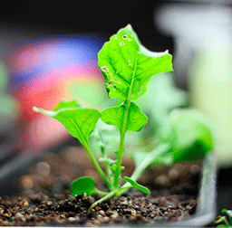
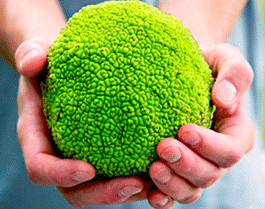
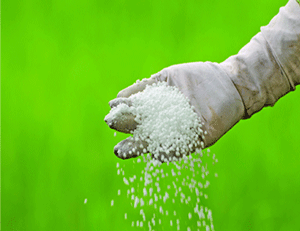
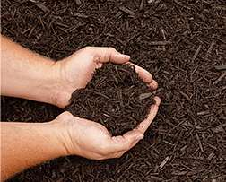
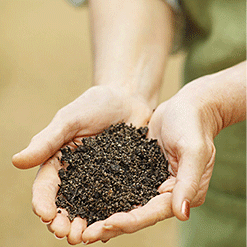

Potting Soil

Peat Moss

Fertilizers

Mulch

Compost
Nursery Supply Co. LLC, the manufacturer of Black Platinum and Gold Diamond hardwood mulch was founded in 1974. In March 2004 the company was purchased by its current ownership based in Louisville, KY. Our mulch manufacturing plants in Clay City, KY and Greenville, IN provide numerous mulch products to customers throughout Ohio, Indiana and Kentucky. We service a customer base which includes;...,